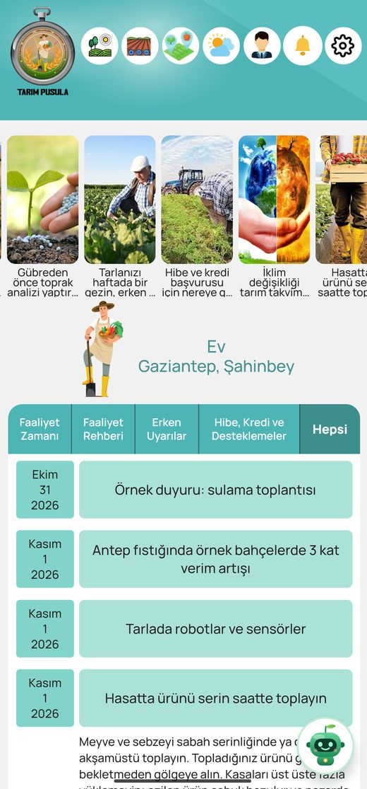
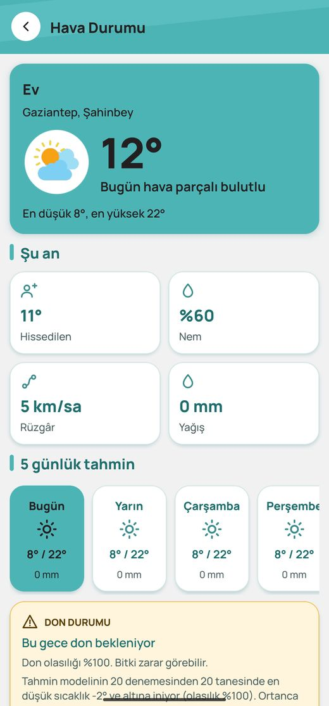
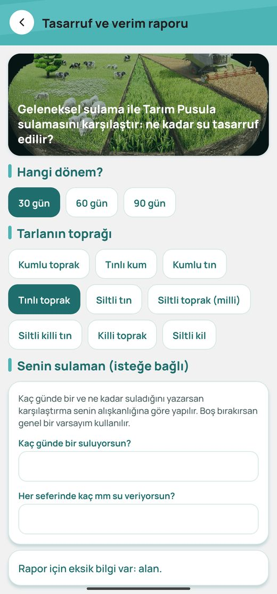
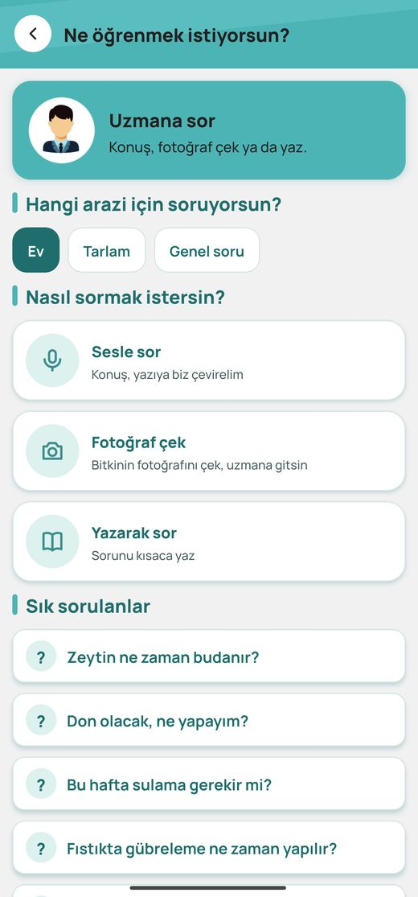
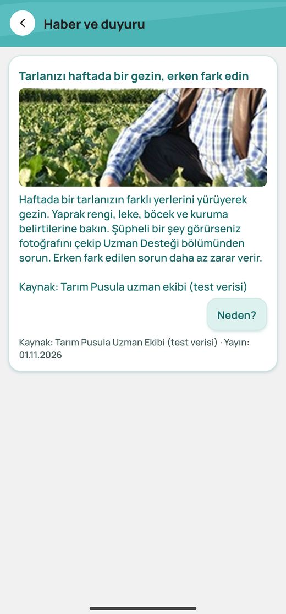
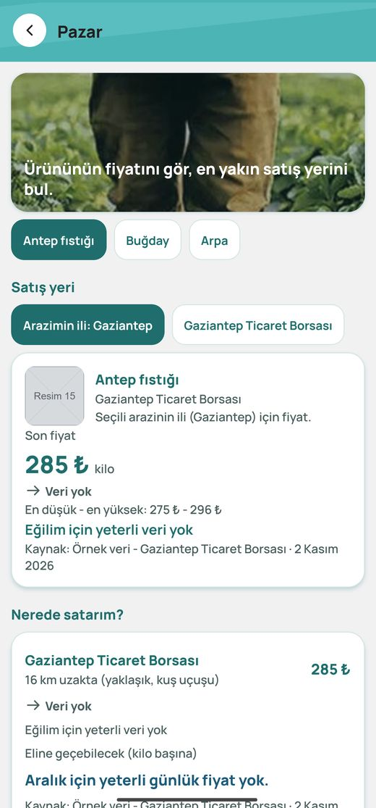
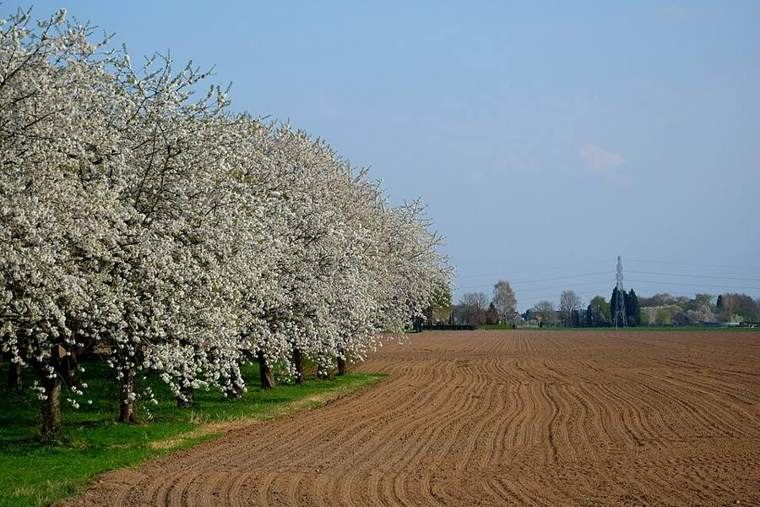
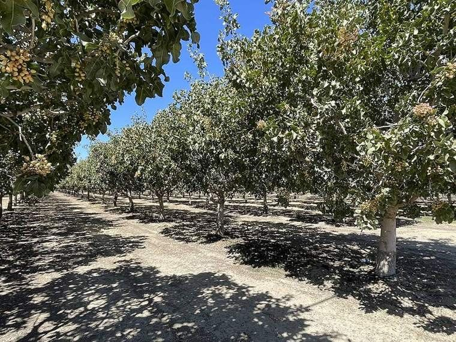
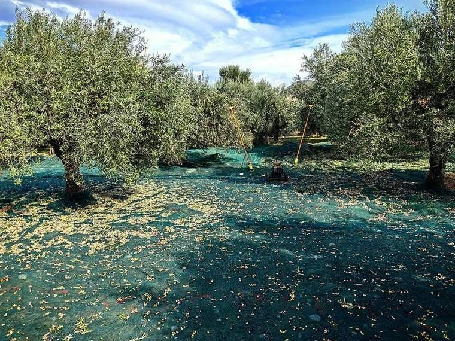

Hava durumu ve don uyarısı
Tarlanızın konumuna özel tahmin. Don riski varsa telefonunuza bildirim gelir.
Deneme sürümü · Ücretsiz
Tarlanızın hava durumu, don uyarısı, su ihtiyacı, tarım takvimi ve kurum duyuruları tek uygulamada. Aklınıza takılanı ziraat mühendisine sorun.
Android 8 ve üzeri · 81 MB · Kurulum rehberi aşağıda

Uygulama
Karmaşık tablolar yok. Tarlanızı bir kez eklersiniz; gerisini uygulama sizin yerinize takip eder.
Tarlanızın konumuna özel tahmin. Don riski varsa telefonunuza bildirim gelir.
Bitkinizin günlük su ihtiyacı, bilimsel FAO-56 yöntemiyle hava verisinden hesaplanır.
Ürününüze göre yaklaşan işler: ne zaman budanır, ne zaman sulanır, ne zaman toplanır.
Fotoğraf çekin, sorunuzu yazın. Bölgenizdeki ziraat mühendisi cevaplar, size bildirim gelir.
İlçe ve il tarım müdürlüğü ile bakanlığın duyuruları, yalnızca sizi ilgilendirenler.
Yakındaki ticaret borsasının ürün fiyatları, kaynağı ve tarihiyle.
Bitki örtüsünün durumunu uydu görüntüsünden izleyin; soluk bölgeyi yerinde kontrol edin.
Vanayı uzaktan açıp kapatın. En çok 30 dakika açık kalır; her işlem kayda geçer.
“Ne yapmak istersin?” diye sorar; tarla eklemek ya da uzmana sormak gibi işlerde yol gösterir.
Ekran görüntüleri





Nasıl çalışır
Şifre yok. Numaranıza gelen SMS kodunu yazarsınız.
Konumunuzu paylaşın ya da köyünüzü seçin; ürününüzü işaretleyin.
Hava, don, su ihtiyacı, takvim ve duyurular tarlanıza göre hazırlanır.
Robot yardımcıya ya da ziraat mühendisine sorun, cevap bildirimle gelsin.
Ürünler
Kiraz, Antep fıstığı ve zeytin için kurum ve uzman duyuruları, takvim ve bakım bilgileri hazır. Diğer ürünler katalogda yer alıyor, içerikleri sırayla ekleniyor.

Kiraz sineği takibi, budama zamanı, çiçeklenmede don ve yağmur sonrası çatlama.

Psillid takibi, var-yok yılı, hasat zamanı ve aflatoksine karşı kurutma.

Zeytin sineği, halkalı leke, hasatta dikkat edilecekler ve damla sulama.
Güvenilirlik
Tarım Pusula’daki her bilgi kaynağı ve tarihiyle gösterilir. Uzman onayı olmayan bilgi rozetle işaretlenir ve asla uyarı ya da talimat üretmez.
İndir
Deneme sürümü ücretsizdir. Kurduktan sonra uygulama kendini güncel tutar; yeniden indirmeniz gerekmez.

c8d5bad263e1d59c952988ed9e0be2f596382cb7c6db6d70972d9860cd1fa217
Giriş ekranında “Çiftçi olarak gir” deyip telefon alanına 0532 000 00 01, kod alanına 123456 yazın. Bu hesap herkesle ortaktır; kişisel bilgi girmeyin.
Birlikte geliştiriyoruz
Bu bir deneme sürümüdür (MVP). Arkadaşlarımızın ve hocalarımızın testlerinden gelen her öneriyle bir sonraki aşamaya geçeceğiz. Denerken şunlara bakmanızı rica ederiz:
Hata, kötü görünen bir yer ya da eksik gördüğünüz bir özellik olursa bize yazın.
Sık sorulanlar
Hayır. Deneme sürümü tamamen ücretsizdir.
Mağaza uygulaması şimdilik yalnız Android içindir. iPhone ve bilgisayarda “Tarayıcıda dene” bağlantısıyla web sürümünü kullanabilirsiniz; Safari’de “Ana ekrana ekle” derseniz uygulama gibi açılır.
APK, Android uygulama dosyasıdır. Bu dosya projemizin kaynak kodundan derlendi; yukarıdaki SHA-256 değeriyle indirdiğiniz dosyanın değişmediğini doğrulayabilirsiniz. Uygulama rehberinizi, SMS kutunuzu ve T.C. kimlik numaranızı istemez.
Yalnız uygulamanın çalışması için gereken veriler (telefon numarası, tarla konumu ve ürünü) alınır; satılmaz, reklam için kullanılmaz. Ayrıntı için “Gizlilik ve KVKK” bölümüne bakın.
Hava durumu gerçek tahmin servislerinden gelir (Open-Meteo, MET Norway). Duyuru ve içerikler deneme sürümü için hazırlanmış örnek verilerdir; kaynakları metnin sonunda yazar. Gerçek kurum duyuruları sonraki aşamada o kurumların kendi hesaplarıyla eklenecek.
Kod birkaç dakika gecikebilir. Hemen denemek için yukarıdaki ortak deneme hesabını kullanabilirsiniz.
Kendiliğinden. Uygulamayı açtığınızda yeni sürüm varsa arka planda iner ve bir sonraki açılışta hazır olur.
Hayır. Yapay zekâ ilaç dozu ya da karışım oranı söylemez; ruhsatlı ürün etiketine ve Bitki Koruma Ürünleri kaydına yönlendirir, gerekirse sorunuzu ziraat mühendisine iletir.
Tarım Pusula, çiftçinin elindeki bilgiyi ve devletin sunduğu desteği aynı yerde buluşturmak için doğdu. Çiftçi çoğu zaman hava, su, takvim, destek ve pazar bilgisini farklı yerlerden, geç ve dağınık öğreniyor. Biz bu bilgiyi tarlanın konumuna ve ürününe göre tek ekranda topluyoruz.
Proje, TEKNOFEST Tarım Teknolojileri yarışması kapsamında geliştirilmektedir.
Uygulamayı denerken şu soruları düşünmeniz bize çok yardımcı olur:
Not: Duyuru ve içerikler deneme için hazırlanmış örnek veridir; hava durumu gerçek servislerden gelir.
Deneme sürümü özeti (taslak). Tam aydınlatma metni, yayın öncesi hukuki gözden geçirmeden sonra eklenecektir.
T.C. kimlik numarası, kişi rehberi, SMS kutusu, arka planda sürekli konum.
Verilerinizi satmayız, reklam için kullanmayız. Hizmetin çalışması için yalnız şu sağlayıcılar kullanılır: SMS gönderimi, hava tahmini (yalnız koordinat), uydu verisi (yalnız tarla sınırı), bildirim ve yapay zekâ cevapları (telefon numaranız gönderilmez).
Uygulamada Tarlalarım → Veri cüzdanım bölümünden verilerinizi indirebilir, paylaşımları kapatabilir ve hesabınızı silebilirsiniz.
Kurum adları deneme sürümünde örnek veridir; gerçek kurumları temsil etmez ve o kurumlarca onaylanmış değildir.